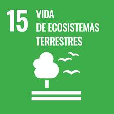

Esta situación de aprendizaje tiene objetivo que el alumnado adquiera nociones fundamentales sobre el reino vegetal concretamente: las características de las plantas y sus partes, su clasificación cada una de las funciones vitales y las plantas en peligro de extinción. Además también se trabajará los sustantivos, su género, número y el tipo de sustantivos utilizando vocabulario relacionado con la temática de la situación. Por lo que se abordará tanto el área de Lengua Castellana y Literatura como el área de Conocimiento del Medio.
Además de los elementos curriculares con esta situación se pretende incidir en la importancia de valorar la diversidad de plantas y lo necesarias que son para el ecosistema así como velar por su protección así que durante el desarrollo de la situación se trabajarán una serie de ODS, concretamente:
.png) ODS 13 Acción por el clima.
ODS 13 Acción por el clima.

ODS 15 Vida de ecosistemas terrestres.